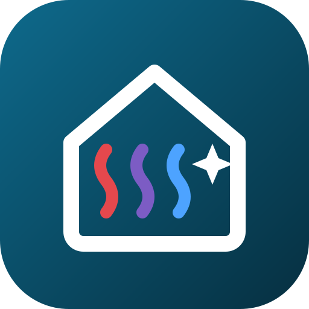

Radia
Suelo radiante: circuitos, caudales y planos, según la UNE-EN 1264, el RITE y el CTE.

BTIPro
Tres pasos y sin hojas de cálculo. El instalador mete lo que ve y lo demás lo deduce la app.
Cargando la escena 3D…
Bilbao · septiembre · 18:4031 °C en el salón.
Llega el técnicoAbre TermikAI en la visita.
Del planoLas paredes, en 3D.
OrientaciónEl sol de cada hora.
ResultadoLa carga de cada estancia.
BTI ProDos minutos. Un informe claro.
Desliza para verlo
Localidad, uso y año. Con el año deduce el aislamiento.

Metros y fachadas, o medidos sobre una foto del plano.

Kilovatios, de dónde viene la carga y el PDF para el cliente.

Es un predimensionado: no sustituye al proyecto firmado por un técnico competente cuando la normativa lo exige. La app lo dice en cada informe.
Próximamente en BTI Pro
Más herramientas para instaladores, con el mismo rigor: normativa con fuente y resultados que se entienden.
Suelo radiante: circuitos, caudales y planos, según la UNE-EN 1264, el RITE y el CTE.
Fotovoltaica sobre el tejado: dónde caben los paneles, cuánto producen y cuánto se ahorra.
Del plano al cálculo y al modelo 3D de la instalación, en un solo paso.
Para llevar
Escanea con el móvil o pulsa para abrir.